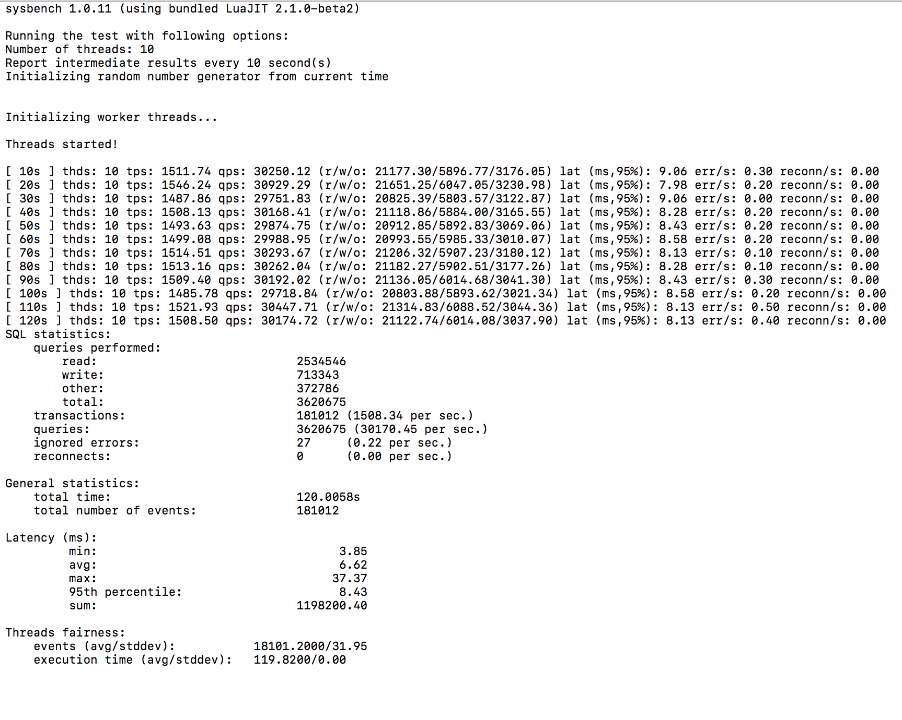

前言
之前常常会看到QPS，TPS这些字样，确实这些指标也是衡量数据库性能的非常重要的指标，而基准测试则是抛开业务，对机子上的数据库进行测试，自己也尝试用sysbench做了一遍，废话少说。
##测试过程
测试主要依赖自带的oltp.lua这个脚本文件，不同系统应该会在不同文件夹下，我的是mac，位于/usr/local/Cellar/sysbench/1.0.11_1/share/sysbench/tests/include/oltp_legacy/oltp.lua，文件搜索一下也能找到。
其次是要准备一个叫做sbtest的库
测试过程比较简单，主要包含三个部分：1.准备数据；2.执行测试；3.清理数据
-
准备数据
准备数据就是初始化表
sysbench /usr/local/Cellar/sysbench/1.0.11_1/share/sysbench/tests/include/oltp_legacy/oltp.lua --mysql-host=127.0.0.1 --mysql-port=3306 --mysql-user={username} --mysql-password={password} --oltp-test-mode=complex --oltp-tables-count=10 --oltp-table-size=100000 --threads=10 --time=120 --report-interval=10 prepare其中涉及到的主要参数（当然可以执行sysbench –help了解各参数的具体解释）：
其中主要有mysql和oltp的参数，其实都比较易懂，mysql的就是连接相关参数
oltp-test-mode这边选的是complex模式，有这些模式：simple(简单select测试),complex(事务测试),nontrx(非事务测试),sp(存储过程)
oltp-tables-count就是初始化表的数量，这里为10张表
oltp-table-size初始化表的大小
thread代表开启线程数
time代表最长测试时间
report-interval表示每10秒输出一次测试进度报告
-
执行测试
sysbench /usr/local/Cellar/sysbench/1.0.11_1/share/sysbench/tests/include/oltp_legacy/oltp.lua --mysql-host=127.0.0.1 --mysql-port=3306 --mysql-user={username} --mysql-password={password} --oltp-test-mode=complex --oltp-tables-count=10 --oltp-table-size=100000 --threads=10 --time=120 --report-interval=10 run >> /Users/dingmingcheng/Desktop/sysbenchtest.log测试结果重定向至测试报告中
结果如下，数据还是很详细的

-
清理数据
sysbench /usr/local/Cellar/sysbench/1.0.11_1/share/sysbench/tests/include/oltp_legacy/oltp.lua --mysql-host=127.0.0.1 --mysql-port=3306 --mysql-user={username} --mysql-password={password} --oltp-tables-count=10 cleanup
结尾
当然，sysbench除了mysql的测试还可以进行别的测试，如cpu测试，memory测试，文件io测试等等，有兴趣可以看看这篇文章